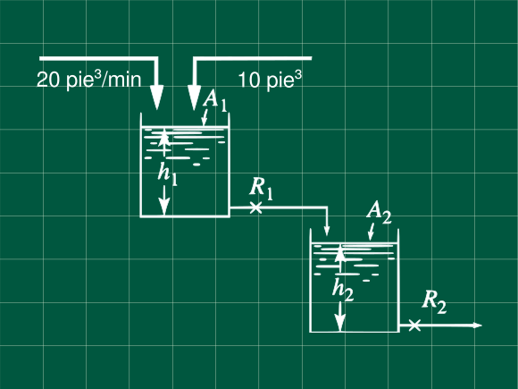
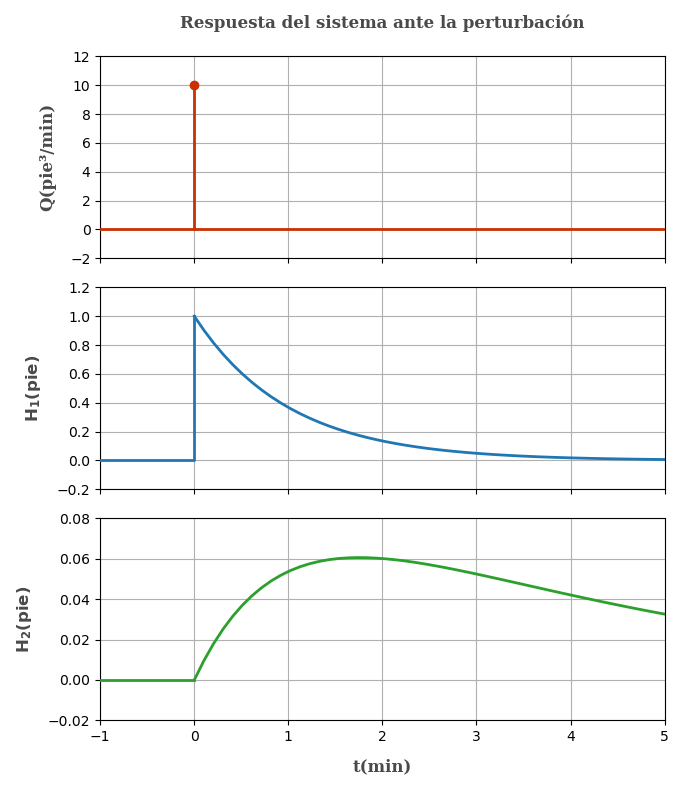

Problema 7.2 (Process Systems Analysis and Control - Coughanowr, LeBlanc)

Dos tanques mostrados en la figura, operan en estado estacionario. At t=0 se agregan al primer tanque, 10 pie³ de agua de manera repentina. Usando apropiadamente las figuras y ecuaciones, determine la máxima desviación del nivel del líquido en ambos tanques del estado estacionario y el tiempo en el cuál ocurre.
A1=A2=10 pie²R1=0.1 pie/(pie³/min)R2=0.35 pie/(pie³/min)
Escribiendo las ecuaciones de balance
Obtención de la ecuación en transferencia
Pero q1=h1/R1 y dV1=A1dh1
q−Rh1=Adtdh1 (1)
Escribiendo el balance en estado estacionario
qs−R1h1s=0 (2)
Restando (1) con (2) para obtener las variables desviación y recordando que dh=d(h−hs), por ser hs constante.
q−qs−R1h1−h1s=Adtd(h1−h1s)
Q−R1H1=AdtdH1
Aplicando la tranformada de Laplacey sabiendo que H1(t=0)=h1−h1s=h1s−h1s=0
Q(s)−R1H1(s)=A1[sH1(s)−H1(t=0)]
Q(s)−R1H1(s)=A1sH1(s)
Reordenando obtenemos la ecuación de tranferencia del primer tanque
Q(s)H1(s)=A1R1s+1R1 ... (3)
Reemplazando datos R1=0.1 ;A1=10 obtenemos la ecuación de tranferencia del primer tanque.
Q(s)H1(s)=1s+10.1 ... (α)
De similar manera podemos obtener la ecuación de transferencia para el segundo tanque
Q1(s)H2(s)=A2R2s+1R2 ... (4)
Recuerde que tambien se cumple
Q1(s)=R1H1(s)
Reemplazando en (4)
H1(s)H2(s)⋅R1=A2R2s+1R2 ... (5)
Multipicando las ecuaciónes (3) con (5) y simplificando obtenemos la ecuación de transferencia del segundo tanque.
Q(s)H2(s)=(A2R2s+1)(A1R1s+1)R2 ... (6)
Reemplazando con los datos R1=0.1 ;A1=A2=10 ;R2=0.35
Q(s)H2(s)=(3.5s+1)(s+1)0.35 ... (β)
Ahora describamos la perturbación
Q(t)=⎩⎪⎪⎨⎪⎪⎧0 10 pie³/min (∞)0 si t<0si t=0 minsi t>0
Entonces
Q(t)=10δ(t)
Aplicando la transformada
Q(s)=10
Para el primer tanque reemplazanado en la ecuación (α)
H1(s)=s+10.1Q(s)=s+10.1×10=s+11
Antitransformando
H1(t)=e−t
Notamos que la función es decreciente el máximo valor que toma es al inicio. Por lo que el máximo valor de la desviación es cuando t=0. Puede confirmar esto reemplazando cualquier valor de t>0, ó graficando la función.
H1(t=0)=e−0=1
Entonces el la desviación máxima es 1 pie en el nivel del líquido del primer tanque a t = 0 min.
Para el segundo tanque reemplazando Q(s)=10 en la ecuación β
H2(s)=(3.5s+1)(s+1)0.35×Q(s)=(3.5s+1)(s+1)3.5
Expandiendo el termino del lado derecho en fracciones parciales (Puede obtener el mismo resultado si usa las tablas)
(3.5s+1)(s+1)3.5=(3.5s+1)A+(s+1)B
3.5=A(s+1)+B(3.5s+1)
Recuerde que es una ecuación y cumple para cualquier valor de s. Eligiendo el valor conveniente de s podemos hallar las constantes.
Cuando s=−1 entonces B=−0.35/2.5
para s=−1/3.5 el valor A=0.35×3.5/2.5
En nuestra ecuación original y reorganizando para la antitransformada
H2(s)=2.50.35(s+1/3.51−s+11)
Aplicando la transformada inversa
H2(t)=2.50.35(e−t/3.5−e−t)
Derivando e igualando a cero para hallar el máximo.
dtdH2(t)=2.50.35(−3.5e−t/3.5−(−1)e−t)=0
Operando
3.5e−t=e−t/3.5
Despejando t
t=2.53.5×ln(3.5)=1.7539 min
Reemplazandoen H_2(t)
H2(t=1.7539)=2.50.35(e−1.7539/3.5−e−1.7539)=0.0606 pie
Entonces la máxima desviación para el segundo tanque se da cuando t = 1.7539 min con una desviación del nivel del líquido de 0.0606 pie.
Nótese que no se nos pide hallar el nivel del liquido (h) cuando la desviación es máxima si no solamente la desviación máxima (H). Si se quisiera hallar el nivel del liquido utilice la ecuación H(t)=h(t)−hs y despeje hs de las ecuaciones del balance en estado estacionario.
Es interesante analizar los estados de este sistema mediante gráficos, así que lo incluyo por si alguien desea verlo.

Referencias
- Coughanowr, D. R.; LeBlanc, S. E. (2009). Process Systems Analysis and Control (3rd edition). McGraw-Hill. ISBN 978-0-07-339789-4.